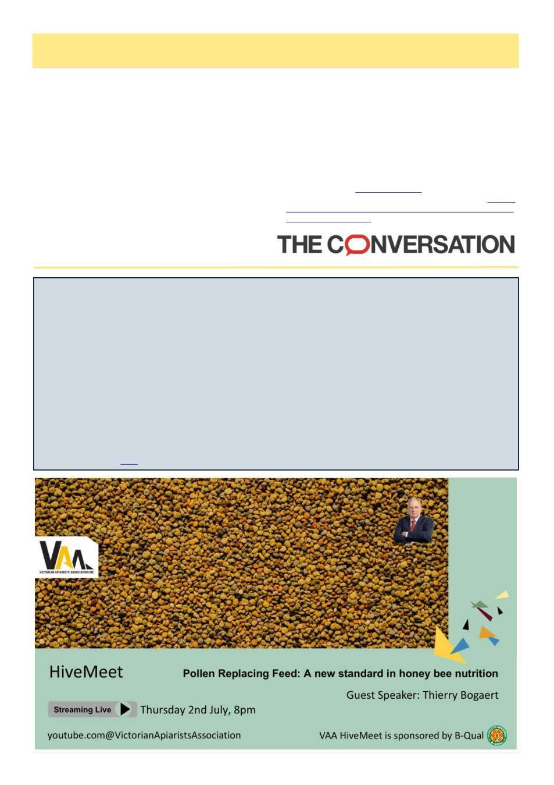

32
Australian Bee Journal
How honeybees really crown their queens
Royal cribs and ladies-in-waiting: new details about the creation of bee royalty
University of California - Riverside
For generations, scientists believed a queen honeybee was made almost entirely by diet: feed an ordinary larva
enough royal jelly and a ruler emerges. But new research suggests queens are created through a more elaborate pro-
cess.
Young worker bees construct specialized nursery chambers complete with custom wax, warmer temperatures, and
devoted attendants that help determine whether a larva becomes royalty.
Published in the journal Nature, the study found that wax chambers where future queens develop, called queen cells
or ―royal cribs,‖ are not simply protective shelters, but carefully engineered environments essential to producing
healthy queens. Researchers identified a previously unrecognized class of young worker bees dubbed ―queen cell
builders‖ that appear uniquely adapted for the task.
―The old idea was relatively simple: take an egg, move it into a queen cell, feed it royal jelly, and you get a queen,‖
said Boris Baer, entomologist and director of the Center for Integrative Bee Research (CIBER) at the University of
California, Riverside, whose laboratory contributed to the work. ―What we found is that there‘s an entire machinery
behind this process. It‘s much more sophisticated than we imagined.‖
Read the full article here
4. Fernandes, K.E., Dong, A., Ayton, J., et al.
(2026). Diverse forage enhances the antimicrobial po-
tency of Australian honey. MicrobiologyOpen. https://
doi.org/10.1002/mbo3.70238
5. Murray, C.J., et al. (2022). Global burden of bac-
terial antimicrobial resistance in 2019: a systematic
analysis. The Lancet, 399(10325), 629–655. https://
doi.org/10.1016/S0140-6736(21)02724-0
6. AgriFutures Australia. (2023). Honey Bee and
Pollination
RD&E
Plan
2023–2028.
https://
agrifutures.com.au/wp-content/uploads/2023/12/23-195
-Honey-Bee-Pollination-RDE-Plan.pdf
7. The Conversation. (2024). Australian honeybees
are under attack by mites and beetles. https://
theconversation.com/australian-honeybees-are-under-
attack-by-mites-and-beetles-heres-how-to-keep-your-
backyard-hive-safe-253947
About the Author
Dr Kenya Fernandes
Research Fellow, Faculty of Science,
University of Sydney
Dr Kenya Fernandes is a microbiologist at the University of
Sydney whose work investigates how microbes shape the
health of pollinators, ecosystems, and people.
Republished from The Conversation under a Creative Com-
mons licence | Originally appeared 2026 March 3rd: thecon-
versation.com/honey-from-australian-wildflowers-has-potent
(Continued from page 31)
Honey The Healer, cont’d